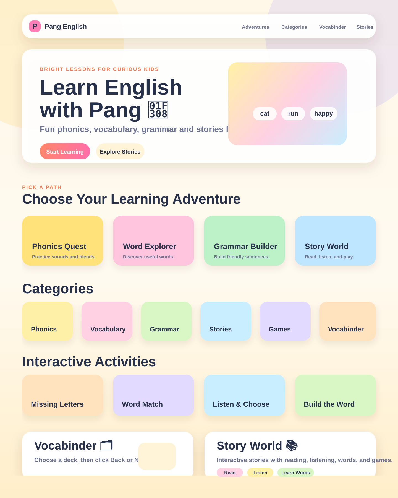

Preview Pang English 🌈
This page is for non-coders. If you downloaded the project, double-click this file, then use the button below.
Open the real app Open preview imageIf you saw a 404: it usually means GitHub Pages has not published this new folder yet, or a local server was started from the wrong folder.
No terminal needed: download the project ZIP, unzip it, open the new-app folder, then double-click open-preview.html or index.html.
